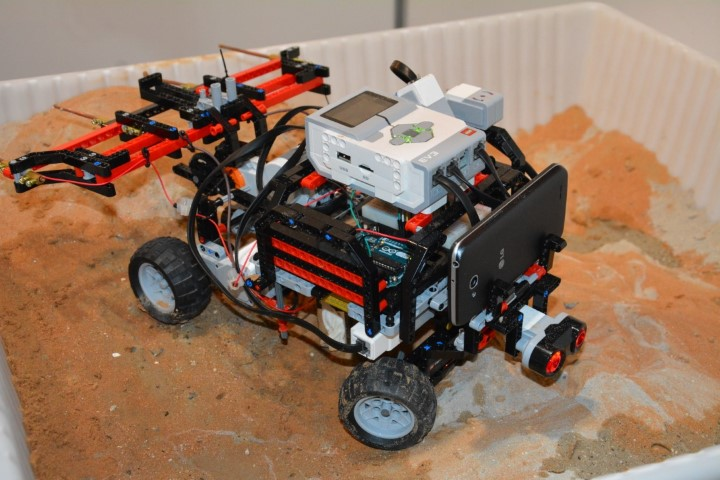
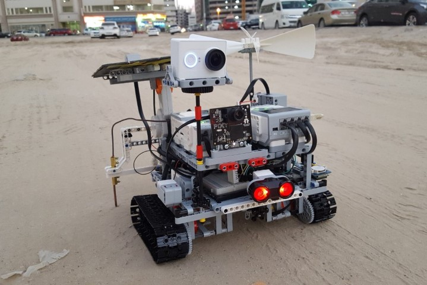

Large scale production management - overseeing, coordinating and tracking production of a IOTIF
Python developer - CLI based helper tools, automation bots for hospitals, etc.
UI based app dev with Python using PyQt (internal apps) and DearPyGUI
Technical blogs writing, product instructions and documentation using LaTeX
Direct client interactions for product demo, project scopes, change requests, etc
QC testing and technical support for all Robocraze products (sub brand of TIF Labs)
Writer and video hosting on YouTube
Primary video editor for YouTube content
Beginner level graphic design and ideation for products and presentation
Internships
Project Manas
2016 - 2019
Title: Sensing & Automation Engineer
AI Robotics club of Manipal Institute of Technology, Manipal specializing in development of robotics powered
by AI like self-driving cars. Robotic arm, swarm robotics, etc.
Developing and writing control algorithms for speed control of an autonomous car in Python
Participated in Intelligent Ground Vehicle Competition (IGVC) and were ranked 9th overall and 2nd in India.
Have also done mini projects like Self balancing Robot using Arduino, Line following and Bot Mirroring.
Industrial Training at Bharat Petroleum, Cochin Refinery
2019
Industrial Training and Observership program at BPCL, Kochi refinery
Observed and studied all the instrumentation process employed throughout the entire plant, from crude oil to
final product, and safety and pollution control
Observership program in Kasturba Medical College, Manipal
2018
I underwent six days of Clinical Research Opportunity Program in three departments
Spent two days in Critical Care, learning about the instruments and machines used to monitor critical patients
Spent two days in Radio diagnosis, learning about X-Ray, CT, MRI, Ultrasound scanning techniques
Spent two days in Nephrology department, learning about the dialyzer and blood detoxification machine
National winner in World Robot Olympiad
2015
Came up 4th in National Round of World Robot Olympiad (WRO) in UAE and qualified for international round
We designed an Autonomous Robot that is capable of detecting Underground Water
Participated in the International Round held in Doha, Qatar with 60 other countries. Built up on previous
Model with extra features like Solar and Wind Mapping, object recognition, live stream, etc.

Rover winning the fourth place for UAE Nationals, 2015

Rover for the International round held in Doha, Qatar, 2015